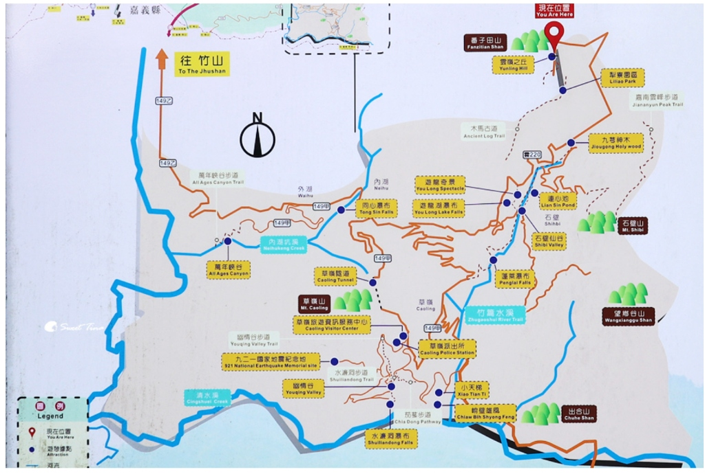

晨光能量補給：早午餐搜尋雷達
早上 09:00 抵達斗六火車站！以【斗六火車站】為起始點，鎖定方圓 2 公里生活圈，雷達為妳精選9:00 前營業、Google 評價 4.5 星以上、步行或短程即可抵達的在地名店！吃飽後可選搭預約計程車/包車直達萬年峽谷，或搭下午 13:30 台灣好行草嶺線！
金字溫暖食堂
從斗六火車站後站出口出來，沿武昌路直行即可抵達
斗六後站搭草嶺線 ➔ 外湖站下車 ➔ 沿 149甲蜿蜒山路走入萬年峽谷
台灣好行 701 雲林草嶺線｜乘車點 ＆ 路線站點圖
營運業者：臺西客運 • 斗六火車站 ⇄ 外湖 ⇄ 東璧山莊
台灣好行 701 雲林草嶺線 官方時刻表（臺西客運營運）
| 方向 | 班次 | 斗六火車站(後站)發車 | 【外湖站】抵達 (萬年峽谷) | 東碧山莊終點 | 備註 |
|---|---|---|---|---|---|
| 去程 (往山區) | 第 1 班 | 08:00 | 08:46 | 09:10 | 9:00前已發車，此班無法搭乘 |
| 去程 (往山區) | 第 2 班 | 13:30 | 14:16 | 14:40 | 下午唯一公車班次（車程約46分） |
| 回程 (往斗六) | 第 1 班 | 11:10 抵斗六 | 10:24 外湖上車 | 10:00 發車 | 東碧山莊 10:00 發車 |
| 回程 (往斗六) | 第 2 班 | 16:10 抵斗六 | 15:24 外湖上車 | 15:00 發車 | 末班車，妳們約16:30下山故採預約叫車 |
因為週六公車 08:00 班次已開走，下一班公車要等至 下午 13:30。為了讓妳們能好好吃早午餐並順利在萬年峽谷遊玩至 16:30：
09:00~10:15 悠閒吃斗六早午餐 ➔ 10:15 在斗六火車站搭預約計程車/包車直達萬年峽谷停車場（車程約 50 分，11:05 抵達）➔ 漫步峽谷、拍美照 ➔ 16:30 預約計程車下山。
09:00~10:15 吃早午餐 ➔ 10:15~13:15 逛斗六太平老街、雲中街文創聚落喝咖啡 ➔ 13:30 斗六後站搭 701 公車 ➔ 14:16 外湖站下車走入萬年峽谷 ➔ 16:30 預約計程車下山。
務必從【斗六火車站後站（武昌路）】出站！
切勿走去前站大同路。出後站剪票口後，走往後站出口右前方約 100 公尺處，即可看到「臺西客運斗六後站候車站牌」，此處即為 701 專屬乘車站！
💡 電子票證優惠：使用悠遊卡 / 一卡通可享電子票證搭乘優惠（半價折扣，單程約 80~100 元以內）。
車程直達外湖站約需 46 分鐘（至終點東碧山莊約 70~80 分鐘）。
第 16 站【外湖站】準時下車！
不要坐到終點草嶺喔！「外湖站」是距離萬年峽谷最近的站牌，下車處就是 149甲 公路起步點（對照下方黑色小人初始位置）。

在「外湖站」下車後，順著 149甲草嶺公路 向西沿著公路平坦柏油路直行。
沿公路前行會經過 4號、3號、2號明隧道。通風遮陽、視野極佳，靠邊走非常安全。
順著 149甲下切，在棕色指標處轉入「萬年峽谷專用聯絡步道」（對照地圖上的棕色虛線）。
步道終點即為地圖上深藍色景點圓圈！走入高架木棧道，俯瞰鬼斧神工的峽谷岩壁與碧綠深潭！
已綁定雲林古坑 GPS 座標，絕對 100% 定位在雲林外湖，嚴禁跳轉新竹或外縣市！
妳點擊上方紅色的「步行模式導航」，就會親眼看見 Google 地圖立刻跳出 6 小時（23 公里）！
這就是我一直想提醒妳的關鍵：不是地址設錯，而是 Google 系統在搞鬼！
因為 149甲草嶺公路的明隧道在 Google 的資料庫裡被標註為『無獨立人行道』。Google 系統有條死規則：「只要是走路模式，嚴禁走沒有人行道的隧道」！因此只要給它 `travelmode=walking`，它就會強迫行人掉頭繞去南投竹山走 23 公里！
綠色按鈕使用能通過隧道的模式，直接在 Google 地圖畫出 149甲草嶺公路（3.3 公里 / 27 分鐘）。現場完全就是照著這條綠色按鈕的路線，從「外湖站牌」順著柏油馬路下坡走 40 分鐘穿過明隧道，就能平安抵達萬年峽谷！
下山預約叫車、晚餐精算時間軸 ＆ 虎尾機車路線
全程約 3.3 公里，以「下坡」為主！
從台灣好行外湖站下車後，沿 149甲草嶺公路經過 4, 3, 2號明隧道（約 1.8km / 25分），再接專用步道聯絡道（約 800m / 10分）至入口，最後走景觀木棧道（約 750m / 10分）即達深潭壺穴觀景台。下坡走起來輕鬆愜意。
約定地點：【萬年峽谷停車場（公廁與地標巨石處）】
峽谷觀景台在溪谷底，車輛絕對開不進去，停車場是車輛唯一能抵達的接送終點。
⚠️ 關鍵提醒：從觀景台走回停車場是「上坡階梯步道」，腳程約 15~20 分鐘。若約 16:30 停車場發車，最晚 16:05 ~ 16:10 就要動身往上走！
答案：絕對有時間，而且非常悠閒！
16:30 包車從峽谷出發 ➔ 17:25 抵達斗六火車站（車程 50~55 分）。
斗六騎機車至虎尾做臉只需 22~25 分鐘（18:55 出發即可）。
因此 17:25 ～ 18:55 足足有 90 分鐘黃金晚餐時間，可以好好坐下來享用雲林美食！
終點店家：泡泡貓 雲林虎尾店（虎尾鎮仁愛路26號）
最順機車路線：斗六火車站前出發 ➔ 西平路/台1丁 ➔ 轉入縣道158（大東路/平和路）（筆直寬闊、車流順暢）➔ 過平和橋跨虎尾溪 ➔ 進入虎尾市區接林森路二段 ➔ 左轉仁愛路26號即抵達泡泡貓！
下午返程精密時間表（分秒不差，完美銜接）
16:10 ➔ 19:30從峽谷底爬上坡階梯回萬年峽谷停車場與司機會合。
走149甲接台3線下山，車程約50~55分鐘直達斗六車站前站。
可選【斗六火車站前吃】（阿國獅魷魚嘴羹、太平老街）或【先騎到虎尾吃】（王家當歸鴨、肯得利香雞排），無時間壓力！
走縣道158大東路，22~25分輕鬆抵達仁愛路26號泡泡貓，19:30準時做臉！
萬年峽谷停車場 ➔ 斗六火車站
行駛動線：萬年峽谷停車場出發 ➔ 149甲 ➔ 149乙 ➔ 桶頭 ➔ 接台3線直行進入斗六市區 ➔ 抵達斗六火車站前站。避開繞路，是下山接回市區最短、最快、最好走的路線！
斗六火車站 ➔ 泡泡貓（虎尾店）
機車動線：斗六火車站前站牽車 ➔ 沿西平路(台1丁)直行 ➔ 轉入縣道158（大東路/平和路）直行約 8 公里（路大條無盲彎，機車非常好騎）➔ 經平和橋跨越虎尾溪 ➔ 銜接虎尾林森路二段 ➔ 左轉仁愛路26號即抵達泡泡貓！
草嶺一心導覽車隊（楊經理 / 楊媽媽）
草嶺在地深耕數十年的專屬導覽與接駁車隊，司機對萬年峽谷與草嶺路況最熟悉。可約定下午 16:30 在萬年峽谷停車場等候接送，專車安全送回斗六火車站前站。
tripool 旅步（長程專車接送）
支援全台山區點對點接送。出發前透過官網輸入「萬年峽谷停車場 ➔ 斗六火車站」，即可線上試算一口價，司機 16:30 會準時在停車場等候。
斗六金興計程車行
斗六火車站前站老字號車行，常年承接草嶺、古坑山區旅遊包車與返程接駁，可事前電話約定接送時間與車資。
台灣大車隊 55688（雲林預約特約車）
可使用 55688 APP 預約專線或手機直撥，說明「預約山區包車接駁：古坑萬年峽谷停車場至斗六火車站」，派車系統透明有保障。
下山後的 90 分鐘黃金晚餐！選擇方案探索在地必吃
斗六火車站美食雷達（精選 4.5★+ 晚餐）
✨ 19:30 泡泡貓做臉，洗去疲勞、水嫩發光！
地址：雲林縣虎尾鎮仁愛路26號（近林森路二段，周邊好停機車）
享受完斗六的早午餐、萬年峽谷的壯麗自然壺穴與舒心健行，下午 17:25 回到斗六享用美味晚餐，19:20 悠閒騎到虎尾仁愛路，躺下來享受專業深層清潔與水光保養，為這趟雲林大冒險劃下最完美的句點！